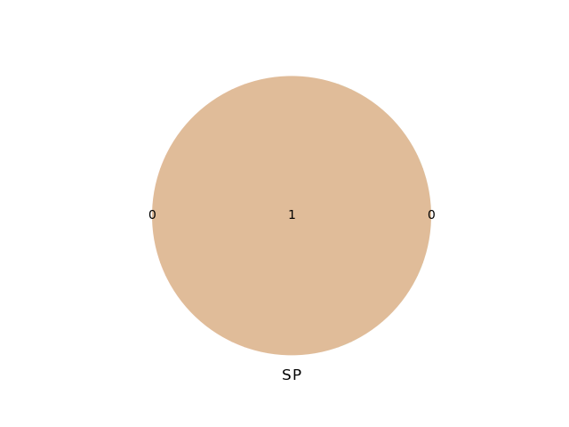

Table of Contents
1 逻辑学介绍
1.1 事实错误与逻辑错误
上帝在第三天创造了太阳。 这里的“天”计量是从太阳光照得来的。 那么三天前太阳是存在又不存在的。 逻辑错误一定不是可辩解的。
1.2 例题
1，2，3，4，5五个人，戴着白帽子黑帽子，白帽子只说真话，黑帽子只说假话。 他们说的五句话。 1说:我看见三顶白帽子一顶黑帽子; 2说:我看见四顶黑帽子; 4说:我看见一顶白帽子三顶黑帽子; 5说:我看见四顶白帽子;
| 1 | 2 | 3 | 4 | 5 |
|---|---|---|---|---|
| S | -S | -S | ||
| X | S | |||
| X | X | S | X | |
| F | F | T | T | F |
1.3 三段论逻辑
反例解释 1.结构相同 2.前提真而结果假
1.4 选择观察效应
2 引言:大师与智者
2.1 半费之讼
2.2 苏格拉底
2.3 “逻辑学之父”:亚里士多德
2.4 公孙龙
2.5 邓析
2.6 名学辩学大成:墨子
3 思维形态与语言单位
| 词项 | 词语名词性词组 |
| 命题 | 语句（因果性语句除外） |
| 推理 | 因果性语句，句组 |
3.1 思维形式
同一类型得思维形态所共有 得具有得思维形式就称作该思维的逻辑形式，又称为形式结构，简称公式 其中保持不变的是逻辑常量，变化的是逻辑变量。
3.1.1 第一组 （命题）所有S是P
- 所有商品都是有价值的。
- 所有物质都是可分割的。
- 所有发展都是由事物内部矛盾引起的。
3.1.2 第二组 （命题）如果p,那么q
- 如果为人民利益而死，就比泰山还重。
- 如果一个人得了肺病，那么这个人就会发烧。
- 如果出现了阶级，那么就会出现国家。
3.1.3 第三组 （推理，因果关系）所有M都是P;所有S都是M
- 所有学生都应该知书识礼。 所有M都是P
- 所有大学生都是学生。 所有S都是M
- --------------------------–—
- 所以，所以大学生都应该知书识礼。 所以，所有S都是P
3.2 常用逻辑符号
3.2.1 逻辑常项
定义：指的是一个逻辑形式中具有确切含义，其含义始终保持不变得部分 如下：“ 如果…… 那么 ……"
3.2.2 逻辑变项
定义：指一个逻辑形式中没有确切含义，可用不同词项或者命题进行替换的部分。 如下：S,P等等。
3.2.3 词项变项
通常用 大写字母 ：S,P,M表示。
3.2.4 命题变项
一般使用 小写字母 表示：p，q，r，s。
4 词项
4.1 许霆“ATM与国家金融机构”
ATM是不是国家金融机构？
4.2 什么是词项？
词项 ：反映对象本质的思维形态，是充当命题主项和谓项的概念。 词项说明的是 类 本质属性 是决定一类事物之所以成为该事务并与其他事物相去别的属性。
4.3 词项的内涵与外延
4.3.1 什么是内涵
词项所反映的对象的本质属性
4.3.2 什么是外延
词项的范围
4.3.3 词项不明确
X与2X哪一个大
4.3.4 公孙龙“白马非马”
从内涵的角度去区别：白与马 外延的角度：白马与马的外延不同
4.4 常见的词项问题
4.4.1 扩大概念或者泛化的问题
高晓松
4.5 明确词项的方法(词项的分类)
4.5.3 正词项与负词项
名词是正词项 只有有“非”词谓的词项才为负词项
4.6 联言推理
4.7 词项间的逻辑关系（欧拉图）
4.7.1 全同关系
S与P具有全同关系，指S和P的外延完全相同（仅仅为外延，不包括内涵）
from matplotlib import pyplot as plt from matplotlib_venn import venn2 venn2(subsets=[0,0,1],set_labels=('S','P')) plt.savefig('image/quantong.png') return 'image/quantong.png'

print("hello org")